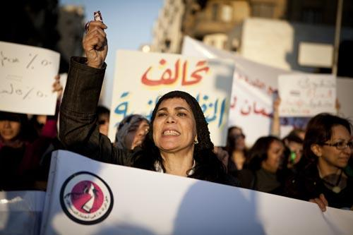
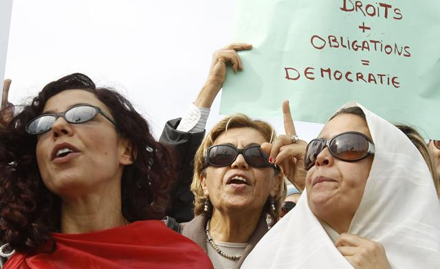
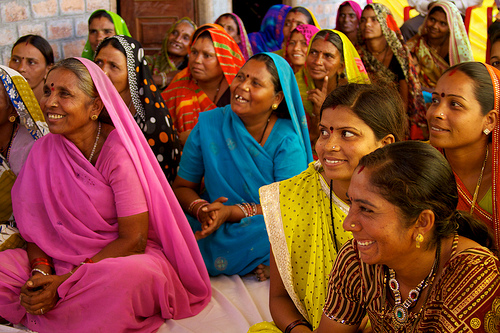
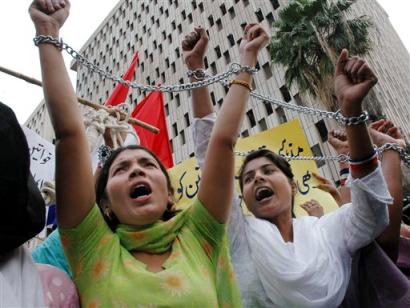

|
|

زنان در تکاپوی برابری در خاورمیانه و شمال آفریقا / زویا اسکندریان
يكشنبه20 فروردین 1391
تغییربرای برابری: بهارخاورمیانه را نگران و امیدوار از هر رسانه ای که به دستمان می رسید دنبال کردیم، هرجا مردم کشته شدند، آه کشیدیم و گریستیم و با هر قدمی که جلو رفتند فریاد شادی کشیدیم، از تهدیدهای دیکتاتورها نترسیدیم و دل به تغییرات آینده بستیم، که بدون وجود آن مردان قرار بود خاورمیانه جای بهتری برای زیستن باشد. ما زنان ایرانی و شاید خواهران ما در مصر و تونس و مراکش و لبنان و جای جای این جهان پرحادثه می دانستیم که با انقلاب ریشه های مردسالاری نهادینه شده در جامعه نخواهد خشکید، می دانستیم که از صبح روز پس از انقلاب باید کفش های آهنین مان را بپوشیم و مسیر دشوار پس از انقلاب را آغاز کنیم. بهار عربی فصلی است تازه در سرنوشت زنان، فصلی دشوار و پر فراز و نشیب که تنها با امید به جهانی دیگر و پیوند با دیگر زنان در منطقه و در جهان با سرانجامی خوب طی خواهد شد.همان طور که نوال السعداوی در پیام هشت مارس خود گفت : «در مصر مبارزه همچنان ادامه دارد. ما باید به شکل منطقه ای و جهانی توانمان را برای مبارزه بکار ببریم. ما نباید مبارزه منطقه ای را از برنامه مبارزه جهانی جدا کنیم. ما در یک جهان ( نه در سه جهان) زندگی می کنیم! و این جهان تحت سلطۀ یک ساختار ستمگر است، ساختاری مبتنی بر سرمایه داری، امپریالیسم، نظامی گری مردسالارانه، نژادپرستی و افراط گرایی دینی.ما دیر یا زود خود را آزاد خواهیم کرد.ما هرگز امید را از دست نخواهیم داد چرا که امیدواری باعث توانمندی و قدرت است.»
خبرها و گزارش ها در ماه های مارس و آوریل نشان داد که عزم زنان برای ساختن جهانی بهتر عزمی جدی است.همان قدر که مشکلات و دغدغه های زنان در این کشورها جدی است.در این گزارش نگاهی داریم به برخی خبرهای مهم زنان در این مدت با امید به آن که از هم بیاموزیم و در کنار هم بمانیم.
در مصر:یک گروه فعال در حوزه حقوق بشر، پیش نویس قانون جدیدی را برای مبارزه با خشونت خانگی ارائه کردند.
مرکز الندیم که سازمانی برای حمایت از قربانیان خشونت است، در بیانیه ای اعلام کرد که امیدوار است بتواند از طریق یک کمپین، هزارن امضا از قشرهای مختلف جامعه و منطقه مختلف مصر در حمایت از پیش نویس این قانون جمع آوری کند.
در این بیانیه آمده است: از آنجا که صداهایی که ابتدایی ترین حقوق انسانی زنان را پایمال می کنند بلندتر از همیشه به گوش می رسند، جمع آوری امضا از حدود 100 سازمان غیر دولتی دیگر کافی به نظر نمی رسد.
این قانون، برای اولین بار، خشونت خانگی را به عنوان جرم معرفی می کند و از دولت می خواهد که قربانیان خشونت خانگی را به لحاظ قانونی مورد حمایت قرار دهد و با ایجاد خانه های امن به آنان کمک کند. تعریف خشونت علیه زنان در پیش نویس این قانون با تعریف ارائه شده در اعلامیه سازمان ملل متحد برای مبارزه و حذف خشونت علیه زنان در سال 1993 منطبق است.
پیش نویس این قانون همچنین، تاسیس مراکز دولتی برای کمک به افراد آسیب دیده از خشونت و ایجاد سرپناه مناسب برای آنان را پیشنهاد می کند.در سال 2005 ، موسسه الندیم حمایت خود را از ایجاد یک قانون مرتبط با خشونت خانگی آغاز کرد و این اقدام باعث ایجاد کمیته ای از سازمانهای حقوق بشری شد که جهت آماده کردن پیش نویس این قانون کار کنند.

از سال 2005 تا 2010 ، این کمیته دربارۀ این پیش نویس در سراسر مصر از زنان طبقات مختلف اجتماع نظر سنجی به عمل آورد و پس از بازنویسی، این پیش نویس در آوریل 2010 به مجلس مصر ارائه شد.
الندیم پیش نویس قانون را مجددا ارائه داده است زیرا تمامی پیش نویس های قانونی ارائه شده به مجلس، پس از انحلال مجلس مصر در جریان انقلاب 25 ژانویه، مسکوت گذاشته شده است.
در مراکش: کمپین امینه برای افزایش آگاهی مردم نسبت به حقوق زنان
امینه دختر نوجوان مراکشی بود که پس از آن که برای ازدواج با مردی که به او تجاوز کرده بود، تحت فشار قرار گرفت با نوشیدن مرگ موش به زندگی خود خاتمه داد. مرگ او باعث شکل گرفتن یک کمپین اینترنتی در سراسر جهان شد که نقش حکومت مراکش در ایجاد تنگنا و اعمال فشار بر زنان و دخترانی مانند امینه را فاش می کند. دادخواستی جهت اصلاح قانون در مراکش و حمایت از قربانیان تجاوز به جریان افتاده است. از طریق آیکون فعال نام امینه در متن، مردم سراسر دنیا می توانند در خصوص حقوق زنان در شمال آفریقا اطلاع رسانی کنند.
Houda Chaloun یکی از سازمان دهندگان این کمپین است. او می گوید: این کمپین زمانی شکل گرفت که او و تعدادی از دوستانش سعی داشتند تا راهی برای آشکار کردن علل مرگ امینه فیلالی بیابند. او افزود: این خبر برای همه مردم مراکش یک شوک بزرگ بود. من و دوستانم می خواستیم برای تغییر قانون کاری انجام دهیم و این کار را سریع آغاز کردیم. بر طبق قانونی که Chaloun بدان اشاره دارد اگر فرد متجاوز با قربانی تجاوز(زن) ازدواج کند تحمل مجازات حبس برای او( فرد متجاوز) الزامی نیست. بر اساس گزارش الجزیره، پدر امینه می گوید که مسئولان دادگاه به او گفته اند که امینه باید با مردی که به او تجاوز کرده ازدواج کند. Chaloun اضافه کرد: بخشی از مشکل قانون در مراکش به این بر می گردد که تعداد کمی از زنان مراکشی در اتخاذ تصمیمات دولتی نقش دارند. تنها یک زن، بسیمه حقاوی، در کابینه عبدالله بنکیران یک پست وزارت برعهده دارد. او وزیر توسعه اجتماعی و امور زنان و خانواده است. سیستم قضایی مراکش نیازمند اصلاحات است.ولی کار این کمپین به این جا ( درخواست از دولت برای تغییر قانون) ختم نمی شود.
Chaloun ادامه داد: ما می خواهیم به مردم بگوییم که نیاز داریم تا با خانواده ها و دوستانمان حرف بزنیم. تغییر قانون، پایان کار ما نیست. ما جوانان مراکشی باید برای تغییر خانواده هایمان و تغییر رفتارمان قدم برداریم. او به وب سایت Tunisia Live گفت که زنان مراکشی همواره در موارد تجاوز گناهکار شناخته می شوند و این که یک زن به هر طریقی حتی با اعمال زور بکارت خود را از دست بدهد، قابل قبول نیست و اگر این امر اتفاق بی افتد خانواده ترجیح می دهد که برای حفظ آبرو درباره این مسئله سکوت کند. قانونی که ازدواج فرد متجاوز را با زن قربانی تجاوز، مجاز می کند نیز تنها با هدف جلوگیری از رسوایی و شرمساری خانواده تصویب شده است.
در تونس: همراهی با مراکش برای اطلاع رسانی و دغدغه¬های پس از انقلاب
در تونس، کشوری که در حوزۀ حقوق زنان از پیشرفته ترین کشورهای عربی محسوب می شود، وبلاگ نویسها و فعالان از طریق توییت کردن # RIP Amina در کمپین امینه شرکت کردند تا سطح آگاهی مردم درباره حقوق زنان را افزایش دهند.یک وب لاگ تونسی به نام Tounisiahorra داستان امینه را برای حدود 30000 بازدید کننده توییت کرده است و یک وب لاگ نویس مراکشی به نام مهدی ادریسی پستی درباره امینه نوشته است و او را با محمد بو عزیزی ( جوان تونسی که با آتش زدن خود شعله های انقلاب را در تونس شعله ور کرد) مقایسه کرده است.
علی رغم اینکه در تونس سالها از تصویب قوانینی که حامی حقوق زنان هستند می گذرد، احلم بالحج، رئیس سازمان تونسی زنان دموکراتیک ، معتقد است که مبارزه برای حقوق زنان در تونس همچنان ادامه دارد. او در مصاحبه اخیرش با Tunisia Live به این موضوع اشاره کرد که ما هم اکنون بر موضوع خشونت خانگی متمرکز شده ایم که زنان بسیاری را درگیر کرده است. این قابل قبول و منطقی نیست که در تونس امروزه یک زن از هر دو زن در معرض خشونت خانگی قرار دارد.

Chaloun نیز می گوید: همکاری و مشارکت بیشتری بین کشورهای شمال آفریقا در راستای بهبود حقوق زنان در این منطقه لازم است. ما همگی در شرایط مشابهی قرار داریم. اگر بخواهم پیامی برای زنان تونسی داشته باشم می گویم که ما باید دست در دست یکدیگر تلاش کنیم و گفتگوهایی آزادانه تر و شفافتر داشته باشیم.
زنان تونسی همچنین درگیر مسائل مربوط به تهیه ی پیش نویس قانون اساسی نیز هستند. در مجلس فعلی که برای نوشتن این قانون تشکیل شده است، حزب اسلامی نهضت درصد بالایی را به خود اختصاص داده است و زنان راه یافته به این مجلس نیز بیشتر متعلق به همین حزب هستند. زنان سکولار و مدافع برابری زن و مرد در تلاشند تا از طریق ارائه متون قانونی مبتنی بر برابری و حمایت از زنان پیش نویس قانون را تا حد امکان از تبعیض خالی کنند.
در هند: زنان مسلمان حق طلاق را به دست آوردند
پس از تلاش¬های بسیار زنان فعال در هند، صدها عالم اسلامی متفق القول این حق را به زنان اعطا کرده اند که در صورت وجود اختلاف شدید و شکاف عمیق بین زوجین، به زندگی مشترکشان خاتمه دهند و عقد ازدواج را لغو کنند ( Daily News and Analysis news agency ، 24مارس).
بر اساس قانونی که در هفته گذشته در سمینار بین المللی حقوق الهی که توسط آکادمی فقه اسلامی در هند برگزار شد، به تصویب رسید اگر اختلاف شدید بین زوجین پدید آید و زن دیگر تمایلی به ادامه زندگی مشترک با شوهرش نداشته باشد، نهایت تلاش و کوشش قاضی باید صرف ایجاد صلح و آشتی بین زن و شوهر شود و در مواردی که آشتی دادن آنها مقدور نباشد باید حکم طلاق صادر شود.

این حکم توسط 300 عالم اسلامی که در این سمینار شرکت داشتند، تصویب شد و شامل شرایطی می شد که در آن بروز اختلاف شدید بین زوجین باعث عدم تمایل یکی از آنها ( زن یا شوهر) به ادامه زندگی مشترک شده است برای جلوگیری از شدت یافتن و خطرناک شدن اختلاف بین زوجین، در صورتی که تلاش برای پا در میانی و مصالحه موثر نباشد، باید قرارداد ازدواج (عقد) لغو شود.
در ترکیه: مجازات عاملین خشونت بر علیه زنان شدت یافت
پارلمان ترکیه در روز جهانی زن تشدید مجازات عاملین خشونت علیه زنان را به تصویب رساند. نخست وزیر ترکیه در این روز اعلام کرد که بر طبق قوانین جدید، دولت می بایست از زنان و کودکانی که مورد خشونت واقع می شوند حمایت کند. قوانین جدید مجازات مجرمین را افزایش داده و به پلیس اجازه قانونی می دهد که وارد عمل شده و قربانیان خشونت را تحت حمایت خود قرار دهد. امری که در گذشته بطور کامل ممکن نبود چرا که خشونت بر علیه زنان و کودکان در خانه امری خصوصی محسوب می شد.
در پاکستان: قوانین حامی زنان به تصویب رسید
زنان پاکستان در تلاش برای رسیدن به برابری و مبارزه با خشونت جنسی با چالش ها و مشکلات بسیاری رو به رو شده اند، مشکلات و موانعی که بیشتر ریشه در سنتهای رایج و رسوم جامعه دارد.
اما در چند سال گذشته، دستاوردها و تغییراتی در قانون ( تغییراتی به نفع زنان) نشان داد که تلاشهای دولت پاکستان و حمایت گروههایی که در زمینه توانمند سازی زنان فعالیت می کنند، مثمر ثمر بوده است.
در روز جهانی زن، هشتم مارس، رئیس جمهور پاکستان لایحه سال 2012 کمسیون ملی در رابطه با مقام زنان را امضا کرد. این لایحه اختیارات مالی و اجرائی این کمسیون را بهبود می بخشد و در نتیجه امکان پی گیری تخلفات در حوزۀ حقوق زنان را افزایش می دهد. یک سال قبل، لایحه پیشگیری از رفتارهای ضد زن به عنوان بخشی از قوانین ملی به تصویب رسید. طبق این لایحه به طور واضح، طیف وسیعی از رفتارها و خشونتهای ضد زن از اسیدپاشی، و ازدواج اجباری تا قتلهای ناموسی به عنوان جرم تشخیص داده می شوند و قربانیان این خشونتها تحت حمایت قانونی قرار می گیرند.

در دسامبر 2011 ، کنترل اسیدپاشی و پیشگیری از وقوع این جرم به عنوان یک لایحه در مجلس سنا تصویب شد و برای نخستین بار راهکارهایی برای چگونگی مجازات مجرمین ( فرد اسیدپاش) و حمایت از فرد قربانی این جرم وابسته به جنس ارائه شد. پس از تصویب لوایحی دربارۀ آزار جنسی در محل کار و خشونتهای خانگی (به ترتیب در سالهای 2010 و 2011 )، زنان در برابر این اشکال خشونت از محافظت و حمایت بیشتری برخوردارشده اند. جهت کنترل و حصول اطمینان از اجرا شدن دقیق قوانین مرتبط با خشونت جنسی، اجرای این سری از قوانین توسط یک هیات نظارتی که به وسیلۀ کمسیون مقام زنان سال 2010 تشکیل شده است، مورد بررسی قرار می گیرد. این هیات از نمایندگان دولت، فعالان مدنی و زنان سازمان ملل تشکیل شده است.
حمایت از قانون گذاران و تغییر باورها
حین فرایند قانون گذاری، زنان سازمان ملل همراه با نهادهای غیر دولتی ( NGOs ) در جهت تحقیق دربارۀ مسائل، تسهیل مشورت کارشناسان با فعالان جامعه مدنی و تهیه پیش نویس اولیه قوانین همکاری می کنند. این همکاریها شامل گفتگوها، میزگردها، برنامه های آموزشی و برگزاری سمینارهایی مرتبط با لزوم برابری جنسی است. آنها همچنین از افراد شاغل در سازمانها و نهادهای ملی، مانند نمایندگان مجلس و افرادی که می توانند بر سر مسائل زنان با مجلس وارد مذاکره شوند کمک می خواهند. این برنامه استراتژی های دفاع و مبارزه را بهبود می بخشد و باعث ایجاد گفتمان با احزاب محافظه کارتر می شود تا درک بهتری از لزوم تغییر ایجاد شود. در ضمن، زنان کارشناسان سازمان ملل بر درستی روند قانون گذاری و تطابق آن با استانداردهای بین المللی نظارت دارند و برای آموزش افراد دست اندر کار قانون گذاری تلاش می کنند.
اگر کلیشه ها و باورهای سنتی تغییر کند و درک بهتری از عدم تبعیض و ایجاد برابری در جامعه پدید آید، این قوانین بهتر اجرا خواهد شد. برای افزایش شرکت مردم و جلب همکاری آنان در تعهدات بین المللی کشور در پایان دادن به خشونت های مرتبط با جنسیت، در سال 2011 ، زنان سازمان ملل در طول فعالیت 16 روزه بین المللی تحت نظارت سازمان مللل ،کمپین یک میلیون امضا را آغاز کردند. این کمپین با مشارکت سازمانهای فعال در حذف خشونت علیه زنان و دختران(EVAW/G) کار میکند و در نوع خود بهترین است. 4500 نفر از اعضای جامعه و کاربران شبکه های اجتماعی به همراه 1500 تن از رهبران زن در پاکستان بسیج شدند و 700000 امضا در حمایت از اهداف EVAWG جمع آوری کردند. در این برنامه همچنین زنان فعال در حوزۀ توانمندسازی نیز مشارکت داشتند که هم نقش رهبری را در زنان به حاشیه رانده شده تقویت و تشویق می کردند و هم برای بهبود عملکرد قوانین جزایی در مورد خشونتهای جنسی فعالیت می کردند.
این دستاوردهای قانونی و حمایتهای به عمل آمده از آنها نشان داد که در پاکستان برای تضمین توانمندی زنان در هر سطحی توافق وجود دارد. با نظارت بیشتر و حمایت و توانمندسازی بیشتر شبکه های زنان این پیروزیها و دست آوردها می تواند به تحولی حقیقی در زندگی زنان پاکستان منجر شود.